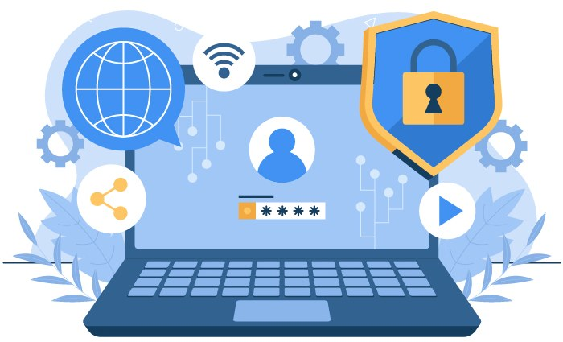

Engaño
Phishing
Mensajes que imitan a entidades de confianza para robar contraseñas.
Nº 01 · Octubre 2026
Edición especial

La transformación digital y sus riesgosIntroducción03ODS 16 · Paz, justicia e instituciones sólidas. Proteger los datos personales también es proteger derechos y confianza.
Introducción
El crecimiento de la transformación digital ha permitido mejorar la comunicación, los negocios y los servicios; no obstante, también ha incrementado los riesgos relacionados con la protección de información personal.
En este contexto, la ciberseguridad se entiende como el conjunto de estrategias, tecnologías y procedimientos orientados a proteger redes, sistemas y datos frente a amenazas digitales (World Economic Forum, 2023).
Por ello, el presente texto analizará la importancia de la ciberseguridad, las principales amenazas informáticas, los factores que aumentan la vulnerabilidad y las estrategias necesarias para fortalecer la protección de datos.
Importancia
La importancia de la ciberseguridad se relaciona con la necesidad de proteger la información frente a accesos no autorizados, modificaciones indebidas o pérdida de datos. La ISO/IEC 27002:2022 establece controles que ayudan a fortalecer la seguridad de la información (World Economic Forum, 2023).
Asimismo, la protección de datos personales permite prevenir problemas como robo de identidad, uso inadecuado de información privada y vulneración de la privacidad de los usuarios.
Amenazas
Las amenazas digitales constituyen uno de los principales desafíos actuales. El phishing utiliza técnicas de engaño para obtener credenciales, mientras que el ransomware bloquea información mediante métodos de cifrado. Asimismo, las filtraciones de datos exponen información personal y pueden ocasionar consecuencias económicas, legales y reputacionales para las organizaciones afectadas.
Mensajes que imitan a entidades de confianza para robar contraseñas.
Bloquea los archivos y exige un pago para liberarlos.
Datos personales expuestos que llegan a terceros.
Vulnerabilidad
Los factores humanos representan un aspecto importante dentro de la ciberseguridad. El uso de contraseñas inseguras, la falta de capacitación y el desconocimiento sobre amenazas aumentan la vulnerabilidad de los sistemas. Por esta razón, la educación digital permite desarrollar mejores prácticas y reducir riesgos relacionados con la seguridad de la información (World Economic Forum, 2023).
Contraseñas insegurasCortas, repetidas o fáciles de adivinar
Falta de capacitaciónNo se reconoce un ataque a tiempo
DesconocimientoDe los riesgos y las malas prácticas
Estrategias
Para reducir los riesgos digitales es necesario aplicar estrategias integrales que incluyan actualización constante de sistemas, autenticación segura, copias de respaldo, capacitación permanente y políticas institucionales. Estas medidas permiten mejorar la prevención y la respuesta frente a posibles ataques.
Conclusión
En conclusión, la ciberseguridad y la protección de datos personales son fundamentales dentro de la transformación digital (ISO, 2022).
El avance tecnológico debe estar acompañado de prevención, educación y medidas de seguridad adecuadas para construir un entorno digital confiable.
Fuentes
Video
Mira la exposición sin salir de la revista.
Orden de la exposición60–90 s
Créditos
Instituciones sólidas también son instituciones que cuidan la información de las personas.
“La seguridad de la información es una responsabilidad compartida.”
Nº 01 · Ciberseguridad y protección de datos personales